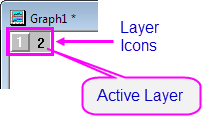
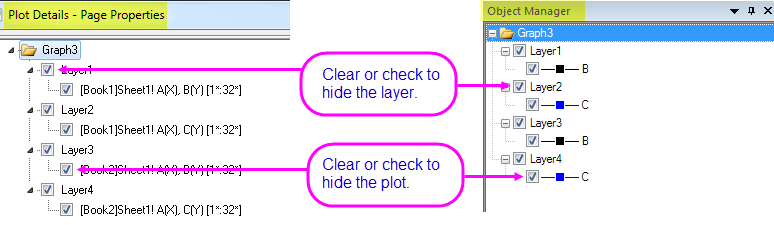
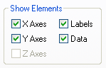
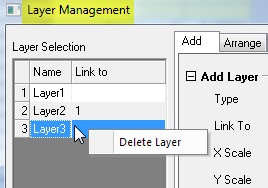

Layer, Zeichnungen und Objekte im Diagramm verbergen oder löschen
Labels-Data-Layer-Hide
Sie können verschiedene Elemente auf der Diagrammseite verbergen oder löschen. Das "Verbergen" eines Elements ist temporär und kann leicht umgekehrt werden. Das "Löschen" ist permanent und kann, muss aber nicht umkehrbar sein.
Beachten Sie, wenn Sie diese Elemente verbergen, werden Sie in keinem Ausgabetyp beinhaltet sein. Eine Verwendung dieses Prozesses ist also das temporäre Entfernen von Elementen aus Ihrem Diagramm, wenn Sie drucken oder exportieren.
Diagrammlayer verbergen
Alle Layer außer den aktiven Diagrammlayer verbergen
- Wählen Sie Ansicht: Zeige: Nur aktiver Layer oder klicken Sie mit der rechten Maustaste auf ein Diagrammlayersymbol und wählen Sie Andere Layer verbergen.
- Um alle Layer anzuzeigen, wählen Sie erneut Ansicht: Zeige: Nur aktiven Layer oder Andere Layer verbergen.
- 
Um andere Layer zu verbergen:
- Klicken Sie mit der rechten Maustaste auf ein Layersymbol und wählen Sie aus dem Kontextmenü Andere Layer verbergen.
- Wählen Sie zum Anzeigen aller Layer die Option Andere Layer verbergen im Kontextmenü. Um einen spezifischen Layer erneut anzuzeigen, klicken Sie mit der rechten Maustaste auf ein abgeblendetes Symbol und entfernen Sie das Häkchen für Layer verbergen.
Um einen bestimmten Diagrammlayer zu verbergen:
- Klicken Sie mit der rechten Maustaste auf ein Layersymbol und wählen Sie aus dem Kontextmenü Layer verbergen. Zum Anzeigen des Layers klicken Sie mit der rechten Maustaste auf das abgeblendete Symbol und wählen Sie erneut Layer verbergen.
- Entfernen Sie im linken Bedienfeld des Dialogs Details Zeichnung das Häkchen neben dem Layersymbol. Aktivieren Sie es wieder für die Anzeige des Layers.
- Entfernen Sie im Bedienfeld der Objektverwaltung das Häkchen neben dem Layer. Aktivieren Sie es wieder für die Anzeige des Layers.
- 
Datenzeichnungen verbergen
Datenzeichnungen verbergen oder zeigen
- Klicken Sie mit der rechten Maustaste auf ein Diagramm und wählen im Kontextmenü Diagramm verbergen oder Andere verbergen.
- Aktivieren oder deaktivieren Sie im Dialog Details Zeichnung das Kästchen neben der Datenzeichnung.
- Aktivieren oder deaktivieren Sie in der Objektverwaltung das Kästchen neben der Datenzeichnung.
Um alle Diagramme auf der Seite zu verbergen oder zu zeigen:
- Entfernen Sie das Häkchen neben dem Menübefehl Ansicht: Zeigen: Daten.
- Um die Diagramme zu sehen, wählen Sie erneut den Menübefehl Ansicht: Zeige: Daten (Diagramme werden angezeigt, wenn dieser Menübefehl aktiviert ist). Alternativ klicken Sie mit der rechten Maustaste in den Layer und wählen im Kontextmenü Alle Daten zeigen.
Wenn Sie nach einer Möglichkeit suchen, Zeichnungen in einem Diagramm in nur einem Layer zu trennen, beachten Sie, dass es eine Methode gibt, um jede Zeichnung in einen eigenen Layer zu extrahieren. Siehe Diagramme und Layer anordnen.
Weitere Elemente im Diagrammlayer verbergen
Beschriftungen verbergen
- Deaktivieren Sie den Menübefehl Ansicht: Zeige: Beschriftungen. Beschriftungen (Achsentitel, Legenden, Text- und Zeichenobjekte) werden angezeigt, wenn dieser Menübefehl aktiviert ist.
Um die Beschriftungen anzusehen, wählen Sie erneut Ansicht: Zeige: Beschriftungen.
|
Hinweis: Um ein Diagramm mit verborgenen Beschriftungen (und anderen Objekten) zu drucken, wählen Sie erneut den Menübefehl Ansicht: Zeige: Beschriftungen vor dem Drucken aus.
|
Achsen, Beschriftungen und Zeichnung im Dialog Details Zeichnung verbergen
Die Registerkarte Anzeige des Dialogs Details Zeichnung bietet außerdem Einstellungen auf Layerebene zum Verbergen oder Anzeigen bestimmter Elemente (Format: Layer):

Es gibt kleine Unterschiede im Umfang der Bedienelemente -- das Dialogfeld Details Zeichnung zeigt oder verbirgt alle Achsen, alle Beschriftungen und alle Diagramme ohne Ausnahme -- aber der Endeffekt ist der gleiche, wie beim Verwenden des Menübefehls Ansicht oder eines Kontextmenübefehls, die verfügbar sind, wenn diese Elemente ausgewählt sind. Elemente, die durch die Einstellungen des Dialogfelds Details Zeichnung verborgen wurden, werden nicht gedruckt oder exportiert.
Diagrammlayer löschen
Zum Löschen eines Layers:
- Klicken Sie mit der rechten Maustaste auf das Symbol des Diagrammlayers und wählen Sie Layer löschen.
- Wählen Sie den Layer durch Anklicken aus (der Layerrahmen zeigt die grünen Auswahlelemente an). Drücken Sie dann die Taste Entfernen.
- Zum Löschen von Layern im Dialog Layerverwaltung klicken Sie mit der rechten Maustaste auf einen Layer im linken Bedienfeld und wählen Sie Layer löschen.
- 
Beachten Sie, dass Sie, wenn Sie einen Diagrammlayer löschen, die Zeichnungen löschen, außerdem jedes Objekt, das Teil dieses Layers ist (Diagrammlegenden, Textobjekte etc.). Das ursprüngliche Arbeitsblatt und die Matrixdaten werden nicht gelöscht.
Datenzeichnungen löschen
Um Datenzeichnungen zu löschen:
- Klicken Sie mit der rechten Maustaste auf die Datenzeichnung im Diagrammfenster oder klicken Sie mit der rechten Maustaste auf die Zeichnung in der Objektverwaltung und wählen Sie Entfernen.
- Wählen Sie eine Zeichnung durch Anklicken aus und drücken Sie die Taste Entfernen.
- Um Zeichnungen im Dialog Details Zeichnung zu löschen, klicken Sie mit der rechten Maustaste auf die Zeichnung im linken Bedienfeld und wählen Sie Entfernen.
Beachten Sie, dass diese Aktionen nicht das ursprüngliche Arbeitsblatt oder die Matrixdaten aus dem Projekt löscht. Das Löschen des ursprünglichen Arbeitsblatts bzw. der Matrixdaten löscht jedoch alle Zeichnungen dieser Daten.
| Hinweis: Das Löschen einer Zeichnung, die Teil einer Zeichnungsgruppe ist, löscht alle Zeichnungen in der Gruppe. |